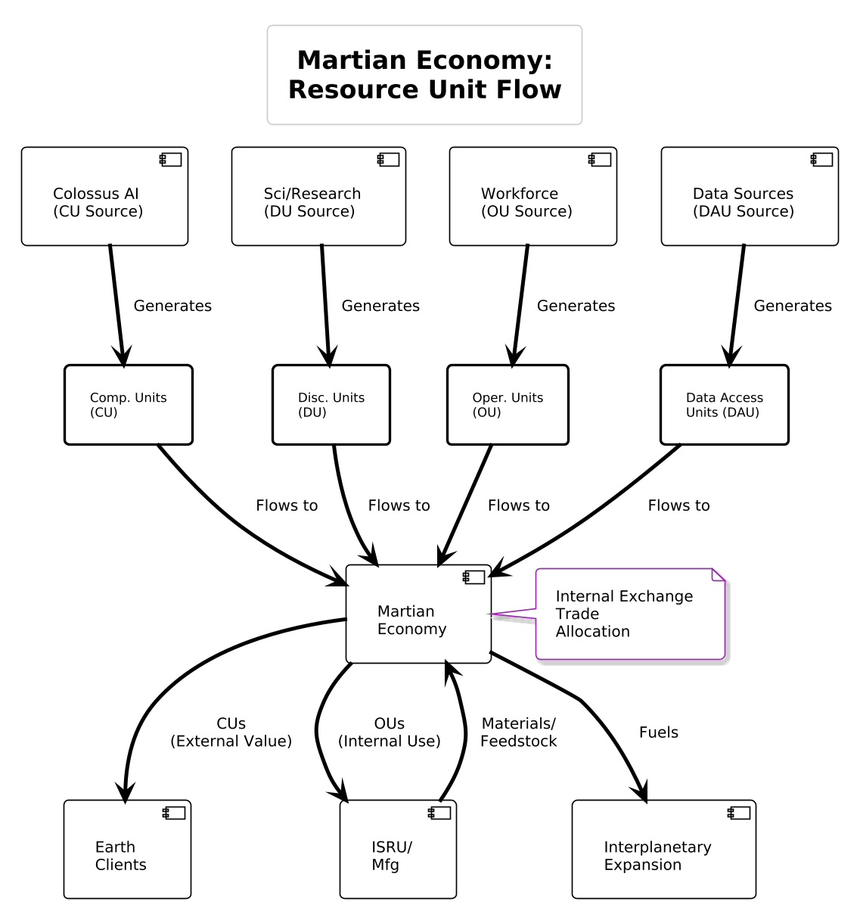

III. Phased Implementation Roadmap
A detailed, phased approach to establishing a sustainable human presence on Mars and beyond.
Phase 1: Foundation (2028–2035)
Initial robotic missions, infrastructure development, and technology validation.
- Robotic precursor missions
- Resource mapping and ISRU validation
- Initial habitat module deployment
Phase 2: Establishment (2036–2042)
First human missions and establishment of permanent surface presence.
- Crewed missions to Mars
- Surface habitat expansion
- Initial food production systems
Phase 3: Expansion (2043–2050)
Scaling of infrastructure and population.
- Expanded habitats and life support
- Local manufacturing capabilities
- Growing permanent population
Phase 4: Interplanetary Network (2051+)
Development of interplanetary infrastructure and expansion to other celestial bodies.
- Interplanetary transport network
- Additional planetary outposts
- Full economic and social ecosystem
